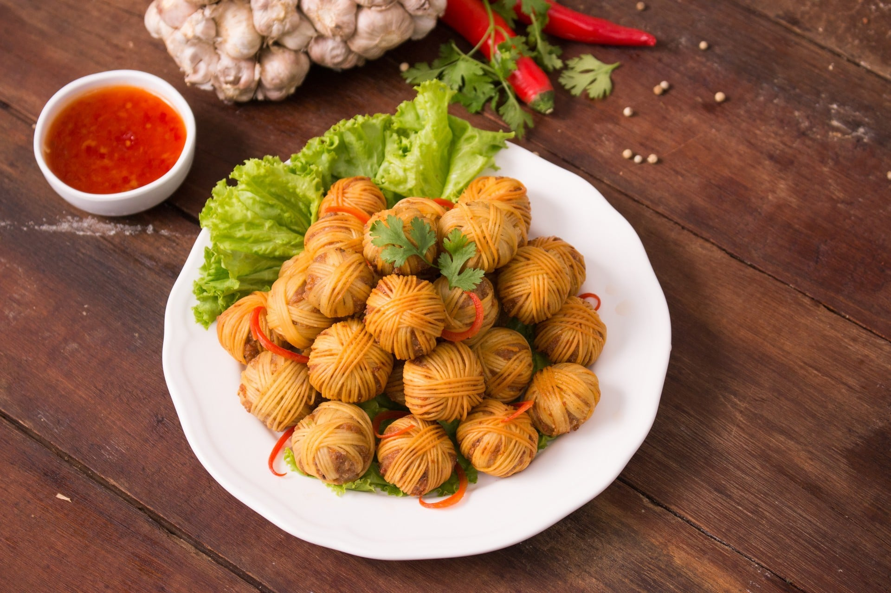
เมนูกินเล่นแบบไทย ๆ พิถีพิถันสุดประณีต
เหมือนยกตำรับลับแม่ครัวในวังมาเสิร์ฟตรงหน้า ถึงเครื่อง ถึงรส หอมกลิ่นสามเกลอ กรอบนอกเเน่นใน
กัดไปคำไหนก็ฟิน กินแล้วเหมือนได้ไปยืนอยู่แผ่นดินอยุธยา
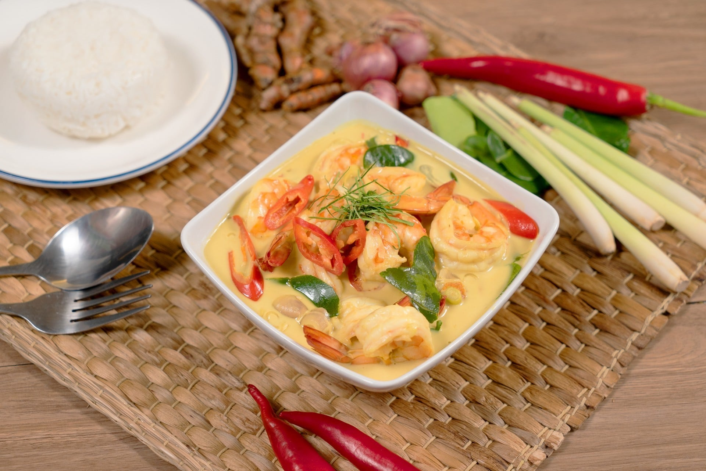
“จอแหร้ง” หรือ “แกงกะทิกุ้งสดตะไคร้” เมนูอาหารพื้นบ้านภาคใต้จังหวัดพังงาง่าย ๆ
อร่อยโดนใจสามารถรับประทานได้ทั้งเด็กและผู้ใหญ่
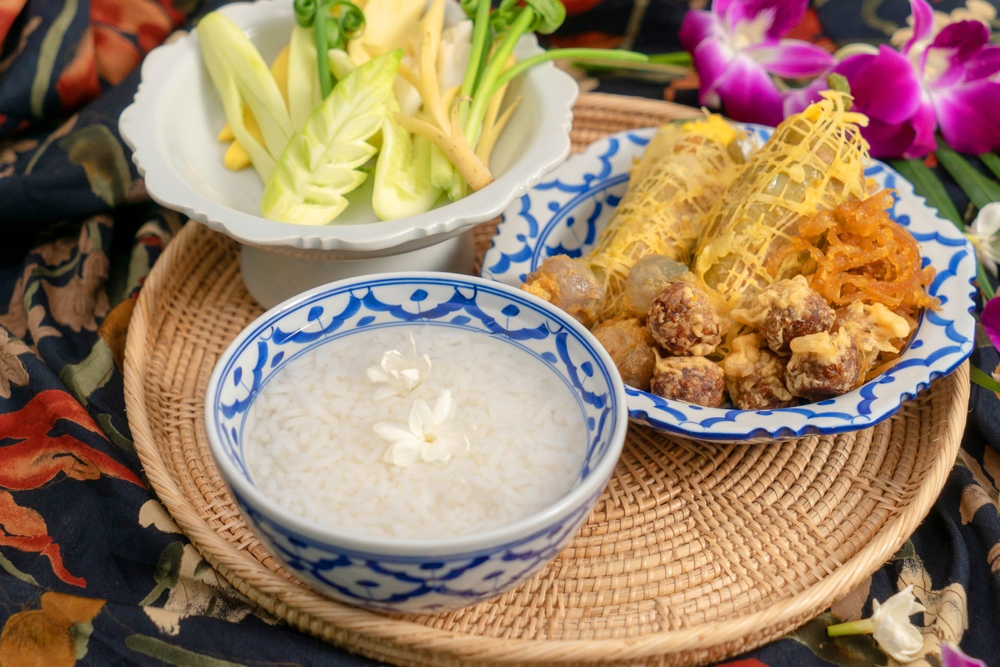
อากาศร้อนตอนบ่าย ๆ ดับด้วยข้าวแช่เย็น ๆ พร้อมกลิ่นมะลิอ่อน ๆ แสนจะชื่นใจ
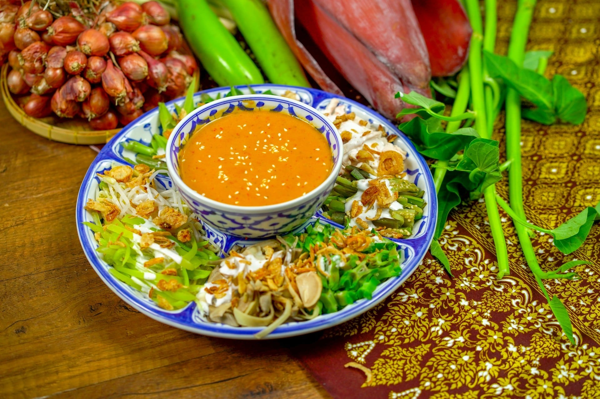
อาหารไทยโบราณที่หากินได้ยากรสชาติก็กลมกล่อม อร่อยถูกปากสุด ๆ
และยังกินได้ทั้งครอบครัว
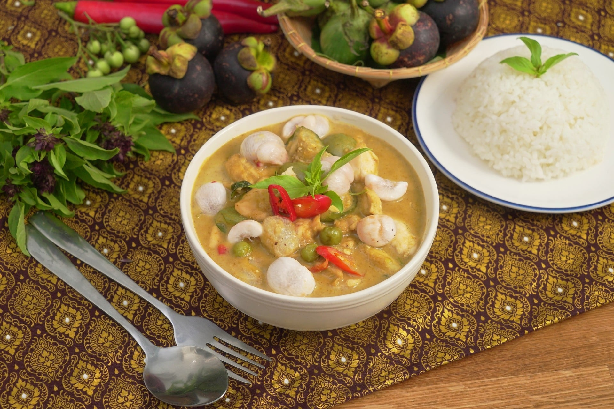
เมนูแกงโบราณอย่าง "แกงเขียวหวานมังคุด"
กินกับข้าวสวยร้อน ๆ บอกเลยว่าหยุดไม่อยู่
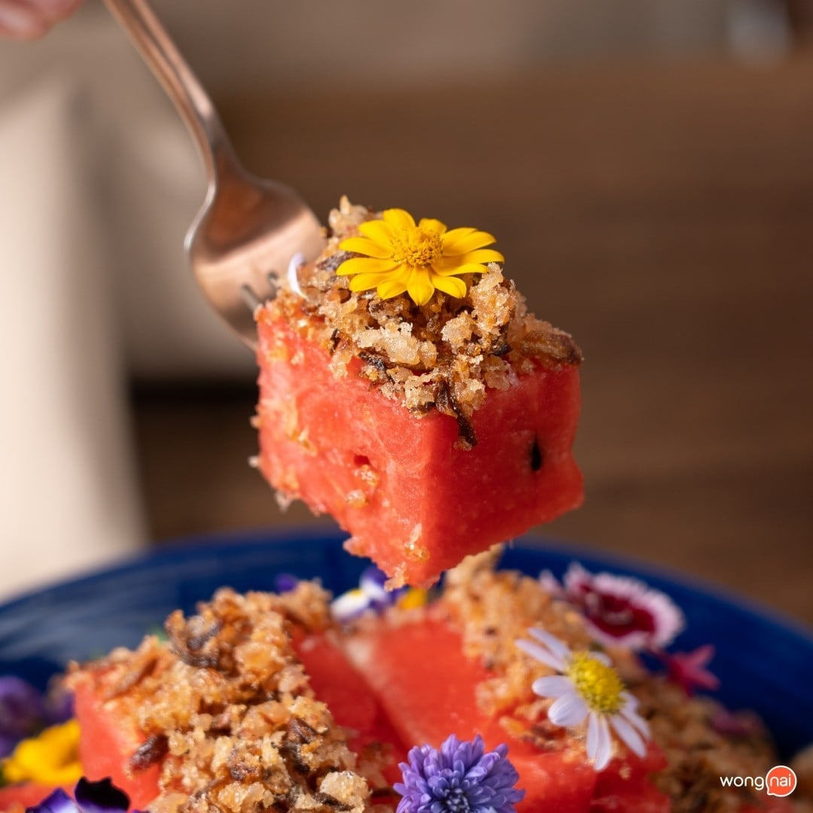
เมนูดับร้อน เย็นชื่นใจ เหมาะสำหรับเป็นเมนูต้อนรับหน้าร้อนจริง ๆ
“แตงโมปลาแห้ง” ของว่างชาววังโบราณ สดชื่นตั้งแต่คำแรก หวานฉ่ำแทรกความเค็มของปลาแห้ง
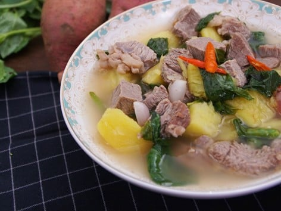
เมนูอาหารไทยที่เต็มไปด้วยคุณประโยชน์และเหมาะสำหรับผู้ที่ต้องการดูแลร่างกาย
ลักษณะกึ่ง ๆ ต้มแซ่บแต่ไม่ใส่เครื่องต้มยำ
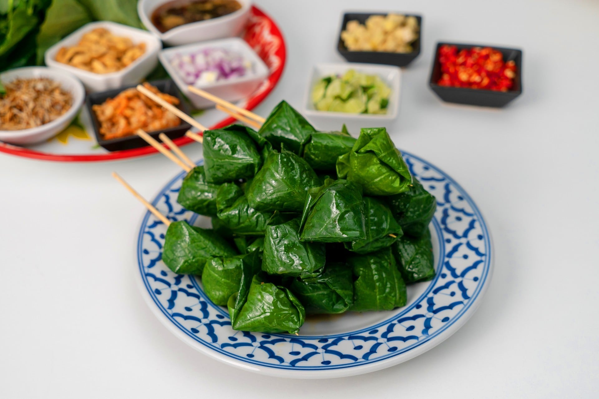
ยามบ่ายที่ว่างเปล่าเติมเต็มด้วย "เมี่ยงคำเสียบไม้" กินสะดวก เกินห้ามใจ
แถมช่วยเรื่องการขับถ่าย และเลือดลมสุด ๆ
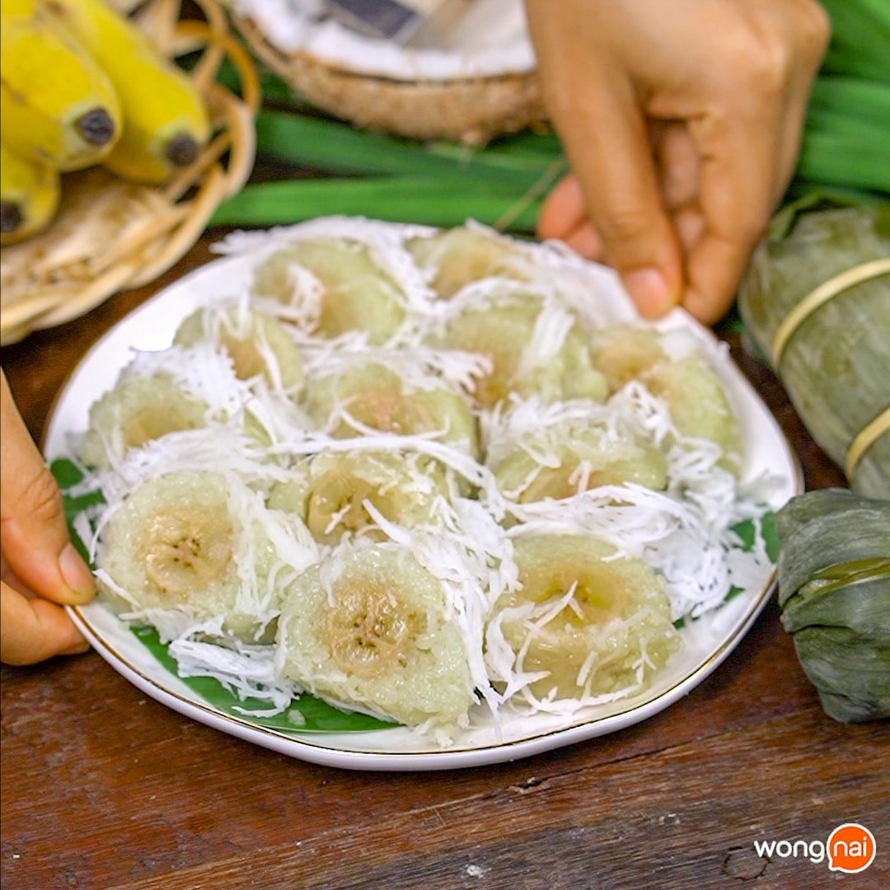
เมนูขนมไทยโบราณรุ่นทวด รสชาติหวาน หอมมะพร้าวอ่อน
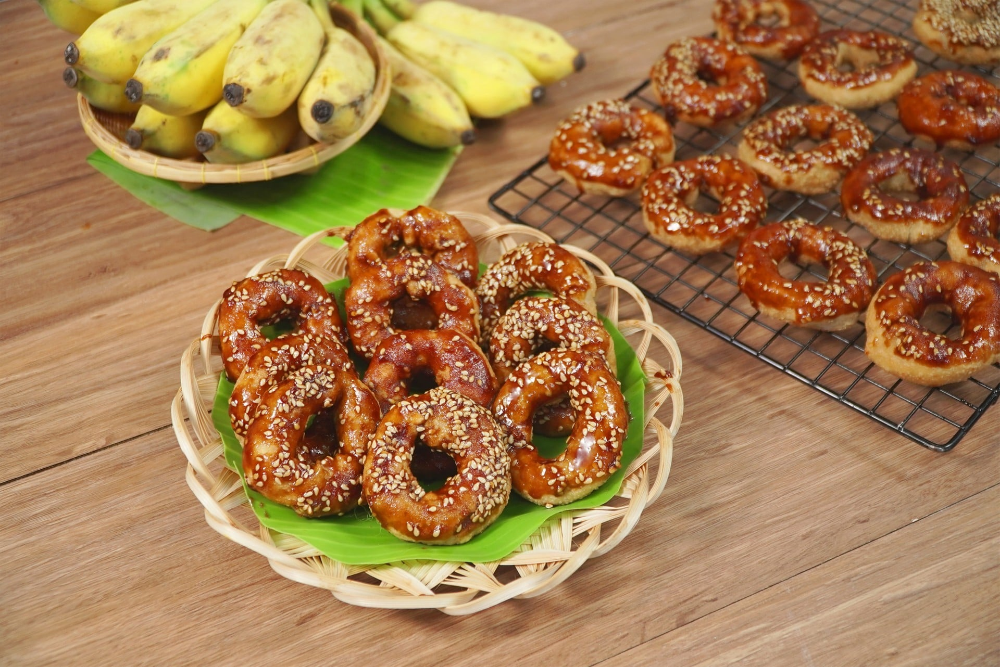
โดนัทสัญชาติไทยที่ได้รับอิทธิพลมาจากชาวไทใหญ่ วงกลมมีรูตรงกลางเหมือนโดนัท
รสชาติหวานหอมจากน้ำตาลอ้อย
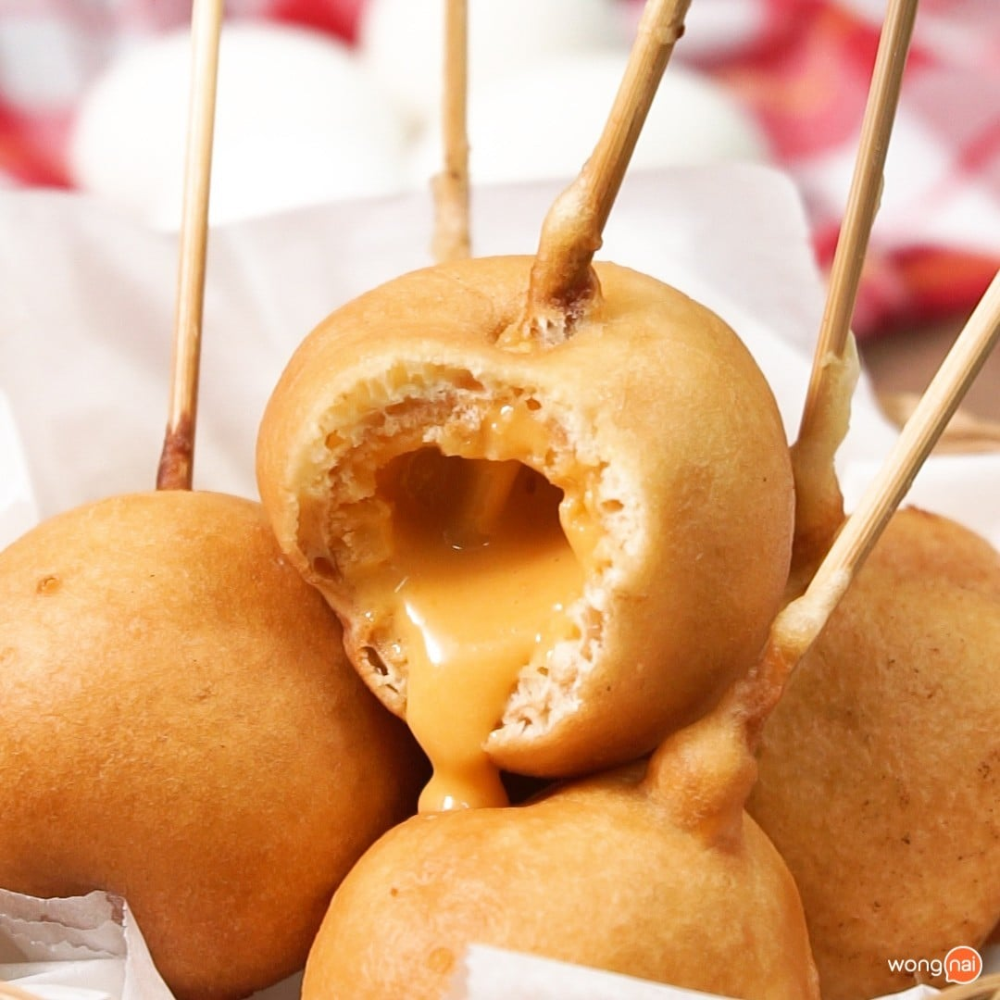
"โป้งเหน่ง" หรือ "ขนมลูกตุ้ม" ที่หลาย ๆ คนเรียกกัน ลูกทรงกลมน่ารับประทาน
ตัวแป้งกับไส้ลาวาไข่เค็มสุดเข้ากัน
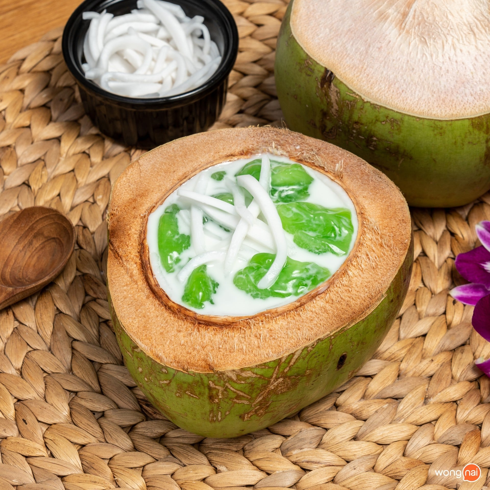
ขนมไทยหากินยาก เนื้อนุ่ม ละมุนลิ้น เสิร์ฟพร้อมน้ำกะทิสุดเข้มข้น
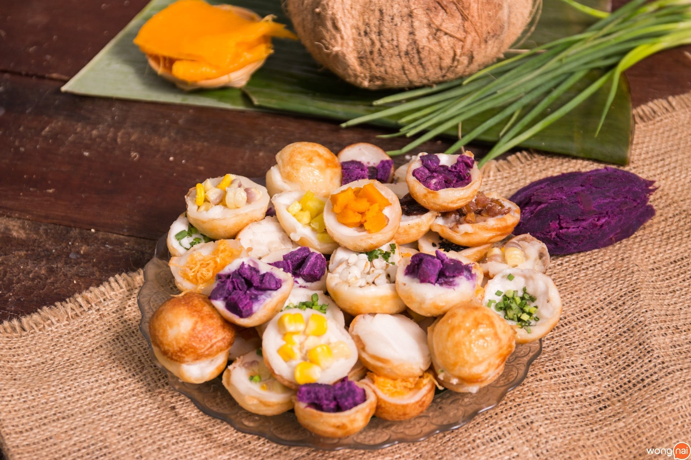
ขนมครกชาววัง สูตรแป้งกรอบกับหน้ากะทิหวานมัน เครื่องแน่น ๆ สีสันหลากหลายสวยงาม
น่ากินสุด ๆ
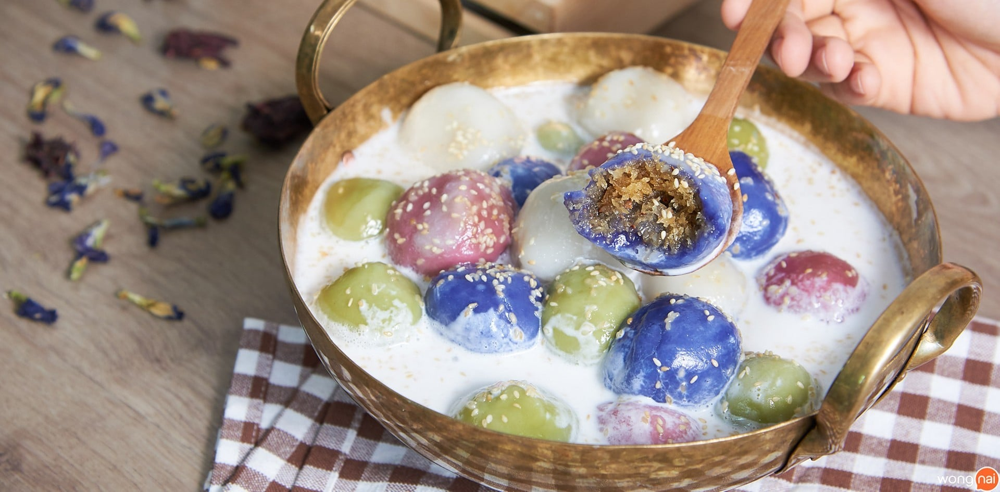
รสชาติกลมกล่อม แป้งเหนียวนุ่ม หวานหอมมะพร้าว เสิร์ฟพร้อมน้ำกะทิสุดเข้มข้น
โรยหน้าด้วยงาขาวเพิ่มลูกเล่นให้ดูน่ากิน